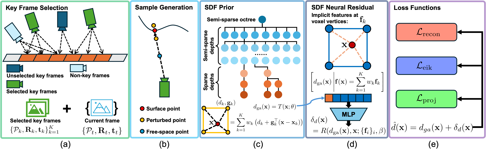

Estimation of signed distance functions (SDFs) from point cloud data has been shown to benefit many robot autonomy capabilities, including localization, mapping, motion planning, and control. Methods that support online and large-scale SDF reconstruction tend to rely on discrete volumetric data structures, which affect the continuity and differentiability of the SDF estimates. Recently, using implicit features, neural network methods have demonstrated high-fidelity and differentiable SDF reconstruction but they tend to be less efficient, can experience catastrophic forgetting and memory limitations in large environments, and are often restricted to truncated SDFs. This work proposes OREN, a hybrid method that combines an explicit prior obtained from gradient-augmented octree interpolation with an implicit neural residual. Our method achieves non-truncated (Euclidean) SDF reconstruction with computational and memory efficiency comparable to volumetric methods and differentiability and accuracy comparable to neural network methods. Extensive experiments demonstrate that OREN outperforms the state of the art in terms of accuracy and efficiency, providing a scalable solution for downstream tasks in robotics and computer vision.
Method overview: a) We keep key frames with small overlap that maximize surface coverage for training; b) With the selected key frames and the current frame, we generate three types of samples: surface points, perturbed points around the surface, and free-space points; c) To predict SDF, we first obtain an SDF prior \(d_{ga}(\mathbf{x})\) with gradient-augmented interpolation in a semi-sparse octree, where each octant vertex has estimated SDF value and gradient; d) We also obtain an implicit neural feature for x by tri-linear interpolation of implicit features stored at the octant vertices, which is fed together with the prior \(d_{ga}(\mathbf{x})\) into an MLP decoder to obtain an SDF residual correction \(\delta_d(\mathbf{x})\); e) The SDF prior \(d_{ga}(\mathbf{x})\) and the SDF residual \(\delta_d(\mathbf{x})\) are combined as the final SDF prediction \(\hat{d}(\mathbf{x}) = d_{ga}(\mathbf{x}) + \delta_d(\mathbf{x})\), and the parameters are trained with three loss functions: reconstruction loss, Eikonal loss and projection loss.


GT

Ours
@inproceedings{Dai_OREN_IROS26,
author = {Zhirui Dai and Qihao Qian and Tianxing Fan and Nikolay Atanasov},
title = {{OREN: Octree Residual Network for Real-Time Euclidean Signed Distance Mapping}},
booktitle = {IEEE/RSJ International Conference on Intelligent Robots and Systems (IROS)},
year = {2026},
url = {https://arxiv.org/abs/2510.18999}
}